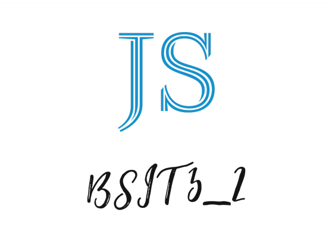

<div class="bg-gray-700 w-64 min-h-screen flex flex-col">
    <div class="flex  justify-start items-center gap-4 pt-4 pl-4 ">
        <div class="flex w-[5rem]">
            
        </div>
        <div>
            <p class="text-white text-3xl">JS</p>
            <p class="text-white text-3xl">BSIT 3-2</p>
        </div>
    </div>
    <div class="bg-gray-400 rounded-md w-11/12 h-0.5 mx-auto mt-4"></div>
    <div class="flex flex-col h-max flex-grow">
        <div class="menus">
            <div class="flex mt-4 gap-2 pl-2 py-1 items-center cursor-pointer w-[90%] mx-auto rounded-lg hover:bg-sky-500 transition-all">
                <i class="bi bi-speedometer text-white text-xl"></i>
                <p class="text-white text-lg">Dashboard</p>
            </div>
            <div class="flex mt-4 gap-2 pl-2 py-1 items-center cursor-pointer w-[90%] mx-auto rounded-lg hover:bg-sky-500 transition-all">
                <i class="bi bi-person-vcard text-white text-xl"></i>
                <p class="text-white text-lg">User Management</p>
            </div>
        </div>
    </div>
    <div class="bg-gray-400 rounded-md w-11/12 h-0.5 mx-auto"></div>
    <div class="Footer mt-auto pb-8">
        <div class="flex mt-4 gap-2 pl-2 py-1 items-center cursor-pointer w-[90%] mx-auto rounded-lg hover:bg-sky-500 transition-all">
            <i class="bi bi-gear text-white text-lg"></i>
            <p class="text-white text-base">Settings</p>
        </div>
        
        <div class="flex mt-4 gap-2 pl-2 py-1 items-center cursor-pointer w-[90%] mx-auto rounded-lg hover:bg-red-600 transition-all ">
            <i class="bi bi-box-arrow-left text-white text-lg"></i>
            <p class="text-white text-base">Logout</p>
        </div>
    </div>

</div>